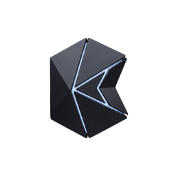

System · Document Q&A
Ask the documents.
Questions are answered from the files in this demo folder, with the source passage behind each answer. Not a search box: a sourced answer.

Kvarzell Consulting ← Back to siteSystem · Document Q&A
Questions are answered from the files in this demo folder, with the source passage behind each answer. Not a search box: a sourced answer.